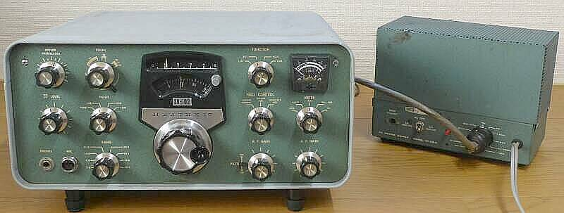 |
純正電源ＨＰ-２３Ａとのツーショットです
ＳＢ-６００という外部スピーカーがあれば、その筐体に内蔵できます
ＨＰ-２３Ａには、バイアス調整ＶＲが付いていますが、ＳＢシリーズでは使用しません（本体内蔵ＶＲで調整）
中圧切替（２５０Ｖ／３００Ｖ）があるところはユニークです
ＳＢシリーズは、３００Ｖを使用します
ＨＰ-２３Ｂも持っていますが、こちらはバイアス調整ＶＲは付いていません |
|
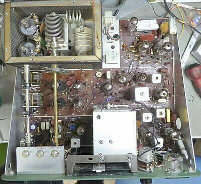 |
シャーシ上面です
ファイナル部のシールド板を取り外しています |
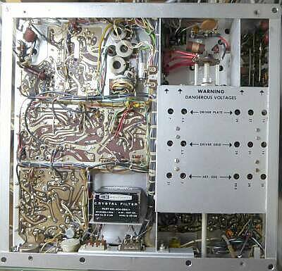 |
写真は、シャーシ底面です
配線について、ワイヤー・ハーネスの採用で、とてもすっきりしています |
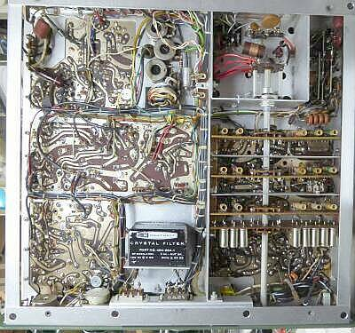 |
ＲＦ部のシールド板を取り外して写しました |
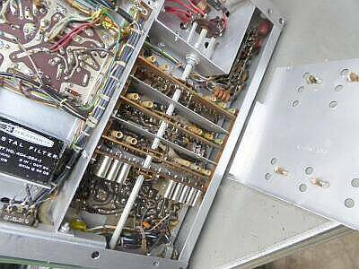 |
高周波部分は、きちんとシールドされています
基本は、アルミ素材
ロータリーＳＷ間のシールド板をきちんと活かすために、そのカバーには、きちんとクランプ（接点板）が配されています |
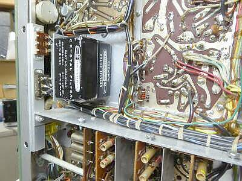 |
３３９５ＫＨｚクリスタル・フィルタは、ＳＳＢ／ＣＷ切り替えが可能です（４００Ｈｚ巾ＣＷフィルタは、オプション設定）
切り替えは、スライドＳＷを出入りそれぞれに配して、連動させるアームを使って行います
ダイオードＳＷではなく機械的な切り替えです
|
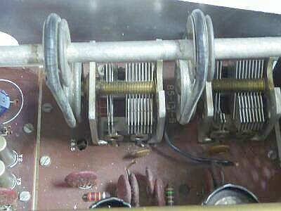 |
こちらオリジナル
写っているゴム・リングは、まだ実用できるレベルです
チェーン駆動にするためには、左右のＶＣの間隔が狭く、右側のＶＣシャフトに取り付けるギア構造のものに工夫が必要になります
|
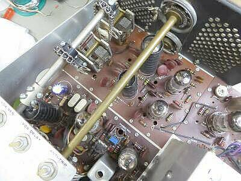 |
この改造、結構大変です
オリジナルは、上写真のようにゴム・リングによる駆動です
時間の経過とともに、ゴムは劣化し最後は切れてしまいます
改造された１台があって、真似ました
チェーン駆動（ドライブ・ＲＦ）と糸掛け（ファイナル・ロードＶＣ）に改造です
シャフト径がＵＳでは、１／４”（６．３５ｍｍ）、国内は６ｍｍ
合わせるのが大変・・・ドリルと丸ヤスリのお世話に
シャフトも３分割です
糸掛けは、プーリー内側に掛けるスプリングさえ適当なものがあれば対応できます |
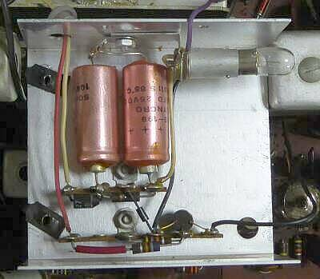 |
ＬＭＯ上部に配されている１０ＶのＤＣ電圧を得る部分
ヒーター電圧１２．６Ｖを半波整流して、ツェナー・ダイオードにより得ています
写真はオリジナルですが、この際ですから３端子レギュレータに変更しました
右側のコンデンサ、電圧を上げていくと数１００ｍＡ電流が流れるという問題が判明、時間を経過すると、こんな問題も生じるということがわかりました（この症状は、初めて！）
もちろん交換しました
写真にあるＰＬは、ツェナーに電圧供給する位置に直列に入ったもので、電流が流れると抵抗値が下がるフィラメントの特性を活かしたものと思います |
|
おまけ ＳＢ-１０１とＳＢ-１０２の違い
細かいところは別として、大きな違いはＬＭＯのみ |
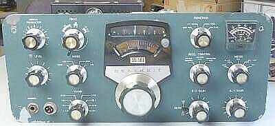 |
まずは大きく変わらないフロント・パネルから
エンブレには、ちゃんとＳＢ-１０１の表記が見えます
ＭＩＣジャックは、オリジナルではありません
当時のデファクトは、ＴＲＩＯ-４Ｐでしたね |
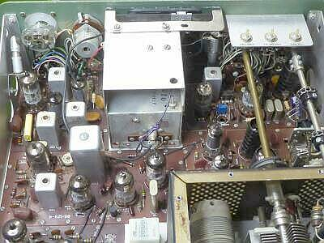 |
ＳＢ-１０２ ＬＭＯ
発振、バッファともに半導体で、ＤＣ１０Ｖを供給
ファイナル部のシールド板を取り外しています |
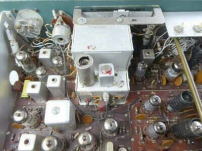 |
ＳＢ-１０１ ＬＭＯ
バッファ部は、真空管で、ＤＣ１５０Ｖを供給
ＬＭＯ内部で、ＤＣ１０Ｖを得ています |
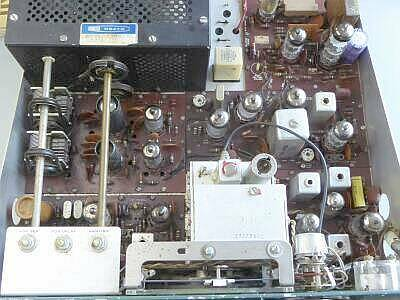 |
ＳＢ-１０１のシャーシ上面
ＬＭＯ回り以外、見た目の変わりはないように見えます |
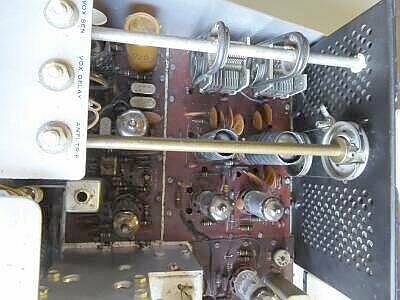 |
長期利用には、いつか問題になるであろうゴム・リングの採用部分（今時点は無事ですが、ひび割れがいっぱい！の状態）
ロードＶＣドライブも、オリジナルはゴム・リングの採用
写真は、糸掛け式に変更した現状です（付いていたゴム・リングは、伸びて使用に耐えられなかったため）
ＴＲＩＯも、最初のＩＦ＝３３９５ＫＨｚ採用モデルであるＴＳ-５１０は、ゴム・リング方式、まさにモデルとなった本機と同じですが、ＴＳ-５１１・・・もしかしたら途中からかもしれませんが、チェーン駆動方式の採用でした
|
余談ですが、ＶＣのステータを浮かせて使う方式の採用は、ファイナル部の中和条件を崩さないためのもので、ステータ側を接地して使う連動ＶＣでは、得られないメリットです（μ同調もこのメリットが得られます）
言い方を変えれば、安易な２連ＶＣの採用は、安定した中和がとれない、ということです |
|
ＳＢ-１０２を２台入手、良いとこ取りとしました・・・なにせ古いもので
シャーシ等はすべてアルミ製で、さびなどは生じません
プリント基板は、ベークライト製で、部品と合わせ劣化は否めません
コンデンサについては、日本の多湿であることを踏まえ、セラミック・コンデンサ以外はまずＮＧと考えるのが正解のようです（電解コンデンサ以外、意外ともっていました）
発熱の大きい抵抗器についても、怪しいものは交換しました
真空管は全て、入手時点で入っていたそのもので、交換は一切していません
調整はきちんと行いました
４０数年ぶりでしょうか、懐かしい音を耳にすることができました
Ｓ／Ｎもよく、歯切れのいい受信音です
チューニングについては、少し手間取りますが、これは致し方ありません
今どきの１０Ｈｚステップのデジタル処理されたものとは異なります（自身の手が、なまったのかも！？）
|
Ｓ／Ｎ１０ｄｂが得られる入力電圧
（スペックは、０．３５μＶ以下） |
送信出力 |
| ７．１ＭＨｚ |
０．３μＶ |
約１００Ｗ |
| １４．１ＭＨｚ |
０．２５μＶ |
約１００Ｗ |
| ２１．１ＭＨｚ |
０．３μＶ |
約１００Ｗ |
| ２８．１ＭＨｚ |
０．３５μＶ |
約８０Ｗ |
新スプリス規定問題はありますが、対応出来れば現在でも十分実用に供しそうです |
|
| 2019．11 ＪＡ４ＦＵＱ |
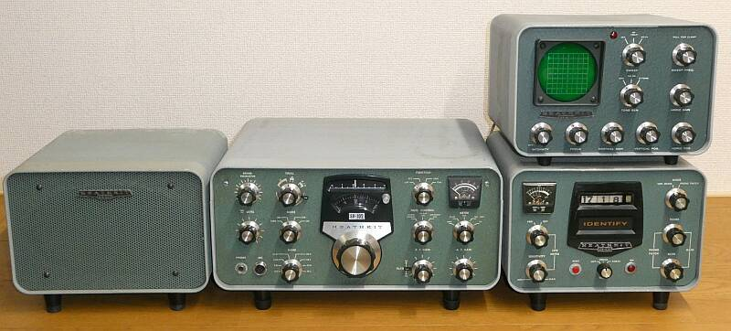 |
| ラインアップが、ある程度揃いました ＳＢ-６００（ＨＰ-２３Ａ内臓）、ＳＢ-６１０、ＳＢ-６３０ |
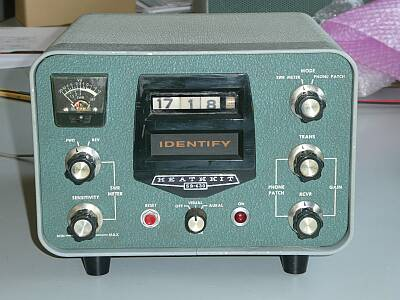 |
ステーションコンソール ＳＢ-６３０ です
Ｃｏｌｌｉｎｓ ３１２Ｂ－４ 相当かと思います
当時は、アメリカ軍、あるいはその軍属が世界中に展開していましたから、本国の家族間とのやり取りに、アマチュア無線を通じたフォーンパッチ需要が大きかったのだと思います
ということで、当時のオプションには必須の機能だったのでしょう |
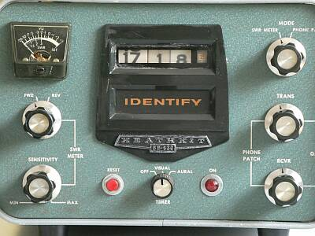 |
ＳＷＲ計（パワー計ではない）と、時計、そしてフォーンパッチ関係
面白いのは、タイマ機能の内臓
１０分（可変可能）ごとに、「ＩＮＤＥＮＴＩＦＹ」・・・識別する、確認するの意味ですが、コールサインの送出を促す機能が用意されています
「ＩＮＤＥＮＴＩＦＹ」バックランプの点灯、合わせてブザーを鳴らすかどうかの選択ができます（中央下ツマミ） |
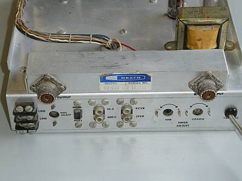 |
リアパネルです
この接続他を見ると、持っている機能が分かります
右半固定ＶＲ２つは、タイマ時間設定用です |
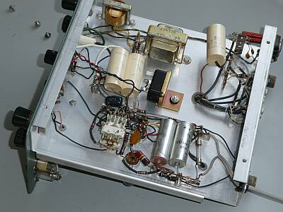 |
中央の黒い物体はブザーです
その前のチューブラコンデンサ２個の充放電時間で、タイマ時間が設定されています
繰り返しは、手前のリレー制御 |
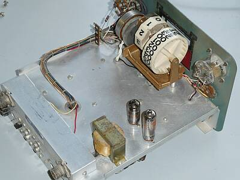 |
時計は完全なるアナログ式
タイマは、真空管を使ってコンデンサの充放電時間を利用したものです（1本は、定電圧放電管）
このタイマにずいぶん手をかけています |
|
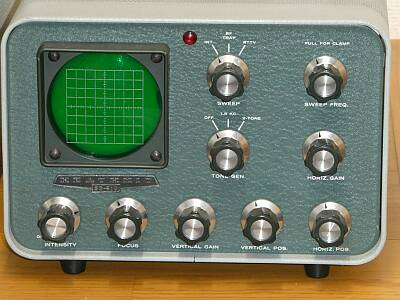 |
ステーションモニタ ＳＢ-６１０ です
送信波形のモニタができます
CWではキークリックの発生とか
TwoToneオシレータを内蔵し、送信リニアリティをチェックすることができます
RTTYのクロスパターンもモニタ出来ます
オシロスコープ＋といったところでしょう |
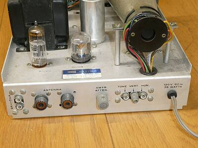 |
リア側 接続先
エキサイタ接続はＲＣＡ
アンテナ接続はＭ型
オシレータ出力や水平軸、垂直軸信号入力はＲＣＡ型
中央のつまみは、送信モニタ時のアッテネータ（ゲイン調整）用ＶＲです
|
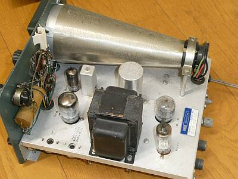 |
シャーシ上面 |
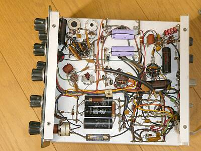 |
シャーシ下面 |